This Issue
August 2026 edition
1955 vs 2024
Median year built of homes resold as flips this edition, against the same period a year ago
Flip exits moved off new-build suburban product onto mid-century core-county stock
The 75 flips resold this edition carry a median year built of 1955, against 2024 for the 301 recorded a year ago, and 42.7% were built before 1950 versus 19.3%. The exit map moved with the product: Polk County took 84% of flip resales against 72.4% a year ago, Dallas fell to 6.7% from 19.9%, and the median flip sat 10.5 km from the CBD versus 16.0 km. Median resale is $250,000 against $365,000, at $179/sqft against $200. Recorded counts lag 4-8 weeks.
Investor Playbook
What this issue's numbers suggest checking, by investor type. Observations from recorded data — not investment, legal, or tax advice.
Older-stock buy boxes, not the suburban new-build lane
Wholesalers
Flipper acquisitions fell to 95 this edition from 164 a year ago, so fewer end buyers are competing but their box has narrowed to pre-1950 and mid-century houses inside Polk County. The data suggests working 50317 ($130,500 median buy), 50313 ($87,500) and 50315 ($162,000), where buys and flips both cluster. Only 2 assignments surfaced on recorded deeds at a $21,500 median spread, so treat that as a floor, not a market read.
Underwrite to $250,000 exits and a nine-month hold
Flippers
Resales this edition cleared at a $250,000 median and $179/sqft, against $365,000 and $200/sqft a year ago, on a median 1,321 sqft, 3-bed, 1955-built house. Median gross margin was $75,000, or 47.5%, before rehab and carry, which the deeds do not show. With a 272-day median hold and 44% of exits past a year, it is worth pricing carry to three to four quarters rather than two on 1955-vintage scopes.
Flipper inventory is turning back toward the resale channel
Landlords
Flip pipeline inventory stood at 2,201 in the latest month and net-to-inventory ran +20 this edition against -137 a year ago, meaning operators added more than they cleared. That is the pool worth monitoring for buy-and-hold pickups in the $87,500-$162,000 buy bands of 50313, 50315 and 50317. Median investor purchase price is $262,000 against $225,000 a year ago, so entry basis on the broader board has moved against you.
The gap sits on older, sub-$200,000 rehab collateral
Private lenders
Only 2 private loans were recorded this edition versus 30 a year ago, while 52.1% of the 317 financed trailing-12-month purchases included rehab funds at a $153,700 median loan and a 1.008 median loan-to-price. The most active books lean rehab-heavy — Kiavi at 15 loans, $196,700 median, 86.7% rehab share; Strongco at 10 loans, 90% rehab share. The data suggests demand for short paper on 1950s-and-older Polk County houses in the $100,000-$200,000 basis range is being served by a handful of names, not by a deep field.
Small multi remains a thin, discounted tape
Multifamily investors
Residential 2-4 unit purchases numbered 8 at a $235,750 median and $110/sqft, against $125/sqft for the 458 single-family buys; Apartment 5+ ran 14 deals at a $1.0M median and $64/sqft. Small multi made up 2.7% of flip exits versus 1.3% a year ago. With counts this thin, single trades move the medians, so it is worth pricing off individual comps rather than the period figure.
Factoids
Numbers from this period a practitioner would repeat to a colleague. Each computed directly from recorded instruments.
530 investor purchases at a $262,000 median — Recorded investor purchases and median price, this edition
holding steady · vs 527 a year ago, median $225,000
Acquisition volume is flat year over year while the price paid moved up. The buy side did not contract with the flip resale count; only the exits did.
50317 at 12% of flip exits — Northeast Des Moines share of flips resold
trending up · vs 6.0% a year ago; Ankeny 50021 fell to 2.7% from 16.9%
Exit concentration rotated from the northern suburbs into the eastern core. 50317 also showed 17 investor buys at a $130,500 median this period, the deepest paired buy-and-flip zip on the board.
62 flip operators recorded a sale — Distinct operators closing a flip resale this edition
trending down · vs 131 a year ago; top-10 revenue share 39.4% vs 82.8%
Fewer sellers cleared exits, but the revenue is far less concentrated than a year ago, when ten names carried over four-fifths of it. Competition on any single resale comp is thinner than the headline count suggests.
272-day median hold — Median days held on flips resold this edition
trending up · vs 263 days a year ago
Holds lengthened slightly even as product got older and cheaper; 44% of measurable resales ran past twelve months. Carry assumptions built on a two-quarter turn are running short of what the deeds show.
2 recorded private loans — Private loans recorded against residential collateral this edition
trending down · vs 30 a year ago
Recorded private lending has all but vanished from the instruments this period, while 60.4% of the 525 observed trailing-12-month purchases were financed at a $153,700 median loan. Bank and specialty paper is filling the space that recorded private notes used to occupy.
$110/sqft on 2-4 unit purchases — Median price per square foot paid on 2-4 unit residential buys, 8 deals
trending down · vs $125/sqft on 458 single-family buys
Small multifamily traded at a per-foot discount to houses, at a $235,750 median on a thin eight-deal sample. Apartment 5+ product was thinner still at 14 deals and $64/sqft.
Market Activity — Investor Purchases
Monthly count of investor purchases of MSA properties (left axis) and the median purchase price (right axis), trailing 13 months. The most recent month can grow up to ~15% as late recordings arrive.
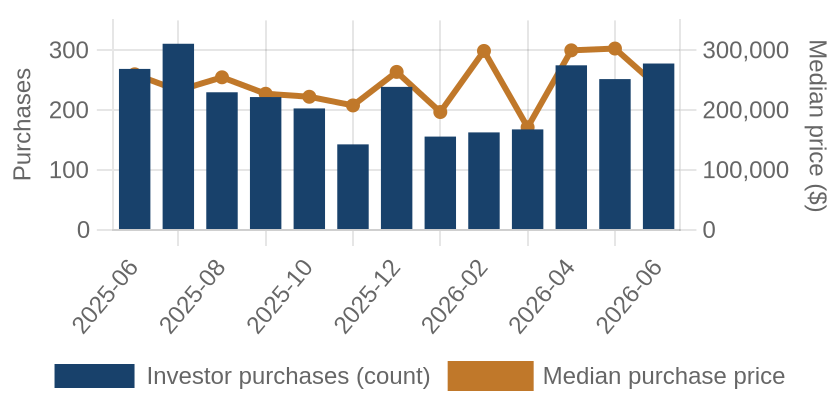
Investor purchases per month (bars) and median purchase price (line), trailing 13 months.
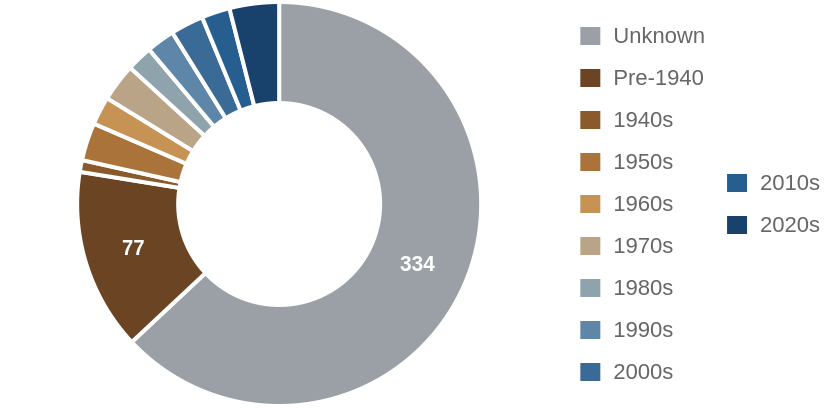
Which vintage of housing investors bought this edition, by decade built.
Where the Money Went
The geography of the period's investor activity: which zip codes saw the most recorded deals, and the largest individual transactions at street level.
The 8 busiest zip codes for investor deals
Pins rank the busiest zips by recorded investor deals (purchases + flips of existing homes) this period — #1 busiest; orange = top 3; pin size scales with deal volume. Median buy is the typical investor purchase; median sale the typical flip resale. Click a pin for details; full table below.
| # | Zip | Area | Purchases | Flips | Median buy | Median sale |
|---|
| #1 | 50317 | Northeast Des Moines | 17 | 9 | $130,500 | $140,000 |
| #2 | 50263 | Waukee | 21 | 2 | $245,000 | n/a |
| #3 | 50009 | Altoona | 18 | 3 | $154,750 | n/a |
| #4 | 50023 | Ankeny West | 16 | 5 | $290,500 | $300,000 |
| #5 | 50021 | Ankeny | 16 | 2 | $170,000 | n/a |
| #6 | 50266 | West Des Moines South | 16 | 2 | $226,250 | n/a |
| #7 | 50131 | Johnston | 15 | 2 | $229,820 | n/a |
| #8 | 50313 | North Des Moines | 10 | 6 | $87,500 | $161,250 |
A representative deal in each of the busiest zips
One deal per zip: the largest matching this market's typical house (typical for this market: 1810 sqft, 3 bed, built around 2016; priced within 4x the county assessment and under 5x its own zip's median).
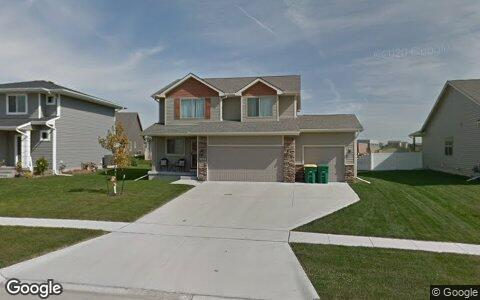
$524,000 · Purchase
2435 SE STONE PRAIRIE DR, Waukee IA 50263
Single family · 1,727 sqft · Jun 15
Street View Oct 2015 — before the purchase
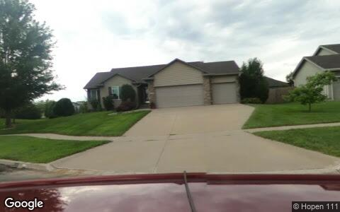
$490,000 · Purchase
1310 91ST ST, West Des Moines IA 50266
Single family · 2,432 sqft · Jun 15
Street View Aug 2025 — before the purchase
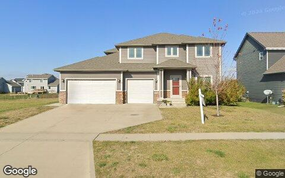
$443,000 · Purchase
1116 NW 27TH ST, Ankeny IA 50023
Single family · 2,322 sqft · Jun 15
Street View Nov 2024 — before the purchase
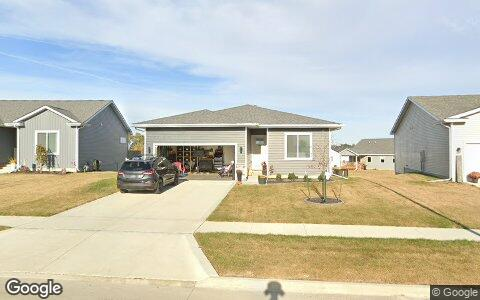
$335,000 · Purchase
1835 17TH ST SE, Altoona IA 50009
Single family · 1,849 sqft · May 21
Street View Oct 2024 — before the purchase
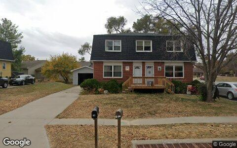
$289,000 · Purchase
1022 SE UEHLAMAR DR, Ankeny IA 50021
2-4 units · 2,016 sqft · Jun 4
Street View Oct 2024 — before the purchase
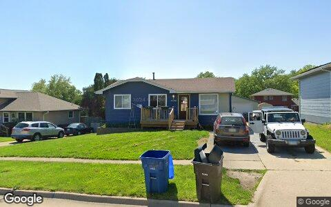
$235,000 · Purchase
3600 WILLIAMS ST, Des Moines IA 50317
Single family · 1,564 sqft · May 22
Street View May 2024 — before the purchase
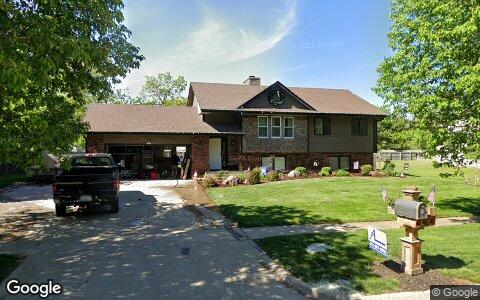
$229,820 · Purchase
4783 NW 65TH AVE, Johnston IA 50131
Single family · 1,686 sqft · Jun 18
Street View May 2021 — before the purchase
Largest flip margin deals of the period, at street level
Gross margin = recorded sale price minus the flipper's recorded purchase price. Purchase deeds are recoverable for roughly 4 in 10 flips; rehab and carry costs are not public record.
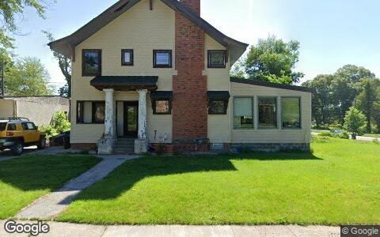
$280,000 gross · bought $160,000 (Sep 2024) → sold $440,000
3507 11TH ST, Des Moines IA 50313
Single family · 2,925 sqft · May 4
Street View May 2024 — before the flip (pre-renovation)
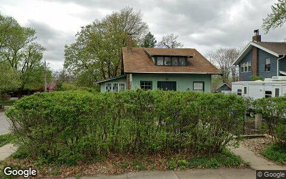
$195,000 gross · bought $195,000 (Sep 2024) → sold $390,000
702 45TH PL, Des Moines IA 50312
Single family · 1,758 sqft · May 14
Street View Apr 2024 — before the flip (pre-renovation)
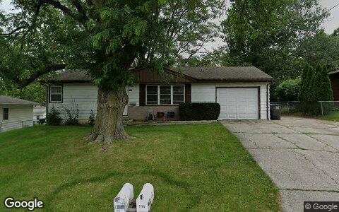
$189,000 gross · bought $111,000 (Nov 2025) → sold $300,000
7707 SW 10TH PL, Des Moines IA 50315
Single family · 864 sqft · Jun 8
Street View Jun 2024 — before the flip (pre-renovation)
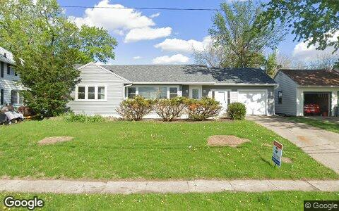
$171,000 gross · bought $81,000 (Nov 2025) → sold $252,000
512 E 8TH ST N, Newton IA 50208
Single family · 1,300 sqft · May 15
Street View Apr 2026 — during the flip
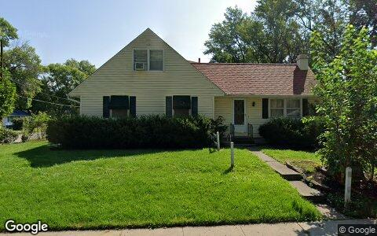
$164,000 gross · bought $142,500 (Feb 2025) → sold $306,500
3824 MARIANNA TRL, Des Moines IA 50310
Single family · 1,657 sqft · May 5
Street View Aug 2024 — before the flip (pre-renovation)
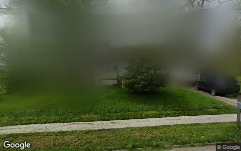
$158,500 gross · bought $61,500 (Jan 2026) → sold $220,000
343 E PAYTON AVE, Des Moines IA 50315
Single family · 1,016 sqft · Jun 1
Street View Apr 2024 — before the flip (pre-renovation)
Flip Structure — Year over Year
How the flip market itself is changing: margins, who is doing the flipping, what they flip, and where. Same two calendar months, this year vs last, from the current data extract.
| Flip market structure | Same months last year | This edition |
|---|
| Flips sold | 301 | 75 |
| Median sale | $365,000 | $250,000 |
| Median $/sqft | $200 | $179 |
| Sale vs county-assessed | 1.18× | 1.16× |
| Median gross margin (matched buys) | $121,500 | $75,000 |
| Median margin % | 92% | 47% |
| Median hold | 8.7 mo | 8.9 mo |
| Homes bought by flippers | 164 | 95 |
| Net to inventory (bought − sold) | −137 | +20 |
| Active flippers | 131 | 62 |
| Top-10 flippers' revenue share | 83% | 39% |
| Median house: sqft / beds / built | 1568 / 3 / 2024 | 1322 / 3 / 1955 |
| Pre-1950 stock share | 19% | 43% |
| 2–4 unit share | 1% | 3% |
| Median distance from downtown | 16.0 km | 10.5 km |
Homes bought counts every deed recorded to a known flipper in the window, resold or not. Net to inventory is that minus flips sold. The standing stock is in the Flip Pipeline section.
Attributed profit per flip (per-investor aggregates, by drop period): Feb 26→Jun 26: 487 flips, n/a (revisions) · Jun 26→Aug 26: 202 flips, $213,740/flip.
County mix (share of flips, last year → this edition): Polk 72%→84% · Warren 3%→7% · Dallas 20%→7% · Jasper 2%→3% · Madison 2%→0% · Guthrie 0%→0%.
Biggest zip share moves: Ankeny 16.9%→2.7% · Waukee 12.3%→2.7% · Northeast Des Moines 6.0%→12.0% · Urbandale South 1.3%→6.7% · North Des Moines 3.3%→8.0% · West Des Moines 1.0%→5.3%.
Flip Pipeline — Buying, Selling and Inventory
Homes bought by known flippers and homes they resold, per month, alongside the stock sitting in flipper hands. A house enters inventory when a flipper buys it and leaves on the next recorded sale, at any price. Purchases still unsold after five years are treated as holds and drop out.
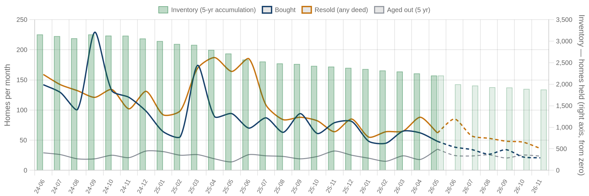
Solid = recorded, dashed = projected. Green bars are inventory on the right axis: homes bought and not yet resold. Aged out is purchases passing five years unsold. Inventory moves by bought minus resold minus aged out.
| Flip pipeline | Bought / mo | Resold / mo | Aged out / mo | Inventory |
|---|
| Latest recorded month (2026-05) | 48 | 62 | 35 | 2,201 |
| Projected (2026-11) | 21 | 36 | 24 | 1,876 |
Method: a straight-line trend through the last 24 months, adjusted for the month of the year, shown dashed as a projection. The series stops before the newest month or two, where deeds are still recording.
Who's Funding the Deals
First mortgages open on flipper purchases from Jul 2025 – Jun 2026 that have not yet resold. 60% carried recorded debt; the rest closed cash or off-record. Ranked by deal count.
60%
Purchases financed
317 of 525 flipper purchases carried a recorded first mortgage
$153,700
Typical loan
median 1.01× the purchase price — the median lender advances rehab money on top of the buy
52%
Funding the rehab too
165 of 317 loans exceed the purchase price, so the lender is covering work as well as the buy
| Lender | Loans | Borrowers | Median loan | Loan vs price | Funds rehab | Median purchase |
|---|
| Hardin County Savings Bank | 24 | 12 | $135,745 | 1.02× | 62% | $122,500 |
| Raccoon Valley Bank | 16 | 9 | $128,700 | 0.91× | 44% | $142,500 |
| Kiavi Funding INC | 15 | 6 | $196,700 | 1.29× | 87% | $155,000 |
| Strongco Holdings LLC | 10 | 6 | $252,250 | 1.27× | 90% | $203,750 |
| Northwest Bank | 9 | 4 | $207,000 | 1.10× | 100% | $165,000 |
| Homeservices Lending LLC | 7 | 6 | $122,735 | 1.03× | 57% | $109,000 |
| Lab Investment Company INC | 7 | 4 | $225,000 | 1.41× | 71% | $195,000 |
| The Fidelity Bank | 7 | 6 | $213,000 | 1.51× | 57% | $145,000 |
| Wells Fargo Bank NA | 7 | 6 | $111,596 | 0.82× | 29% | $130,000 |
| 1ST Nat'l Bank | 6 | 2 | $536,507 | 0.71× | 0% | $760,000 |
Rates and terms are not published: the county feed models both. Borrowers counts the distinct flippers on each lender's book. Loan vs price is the recorded first mortgage divided by what the buyer paid. Above 1.00x the lender is funding purchase plus rehab; below it the buyer brought cash to the table. Blanket mortgages covering several parcels are excluded, as are loans outside 0.1x-3x the price. Rates and points are not public record.
Flipper Profile — The Working Flipper
The 70th–90th percentile of local flippers by lifetime flip count — the established operators below the whales: 4–13 lifetime flips each. Bath counts are not in the assessor extract.
119
Flippers in the band
each with 4–13 lifetime flips (avg 6.4)
$232,500
Median gross margin
2,949 flips matched to their purchase price
7.7 mo
Typical hold
purchase to resale, matched deals
1810 sqft · 3 bd
Typical house
median year built 2016
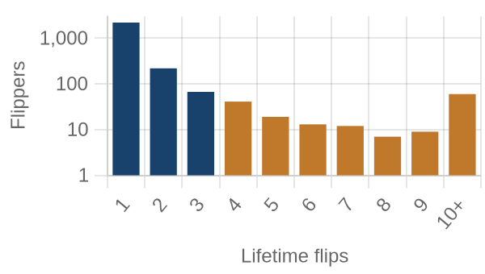
flippers by lifetime flips · orange = this band
Where they work: Northeast Des Moines (50317) 10% · Waukee (50263) 10% · Ankeny West (50023) 9% · South Des Moines (50315) 7% · Beaverdale (50310) 5%.
Market Pulse
| per month, Feb–Jun 2026 | per month, Jun–Aug 2026 | change | avg/mo 2yr | avg/mo 4yr |
|---|
| ▼ Homes bought by flippers | 82 | 48 | -42% | 93 | 113 |
| ▼ Flips sold (deeds) | 151 | 38 | -75% | 111 | 111 |
| ▲ Lending deals funded | 10 | 23 | +142% | — | — |
| ▲ Seller/notes held (net) | 0 | 26 | +26/mo | — | — |
| ▼ Investors (net) | 105 | 97 | -8% | — | — |
Flips and flipper purchases = recorded deeds, same two months each year; their 2- and 4-year columns are per-month averages of the deed series. The remaining rows come from the investor file, which spans 13 months, so they have no multi-year average (2026: Jun 2026 → Aug 2026; 2025: Feb 2026 → Jun 2026).
Past Issues
Methodology
Source Data
County recorder & assessor via FARES
Every figure is computed from recorded instruments (deeds, mortgages, assignments) and assessor property records for the five counties of the Des Moines-West Des Moines-Elyria MSA. No surveys, no estimates, no listings data.
This edition analyzes transactions dated May 1 – June 30, 2026, as recorded through the 2026-08 data extract.
Who Counts as an Investor
Transaction-pattern identification
Investors are entities whose recorded transaction history looks like investing: rental holding (landlords), short-hold resales (flippers), private mortgage lending, note holding, or contract assignment (wholesalers). Banks, homebuilders, iBuyers, SFR funds, and government entities are identified by name and reported separately from small investors.
How Comparisons Work
Attribution deltas + same-window comparisons
The Market Pulse reports activity attributed between successive data drops, from the per-investor lifetime totals maintained upstream — periods differ in length, so per-month rates are shown. Elsewhere, "vs. year ago" compares the same calendar months one year earlier, counted from the same data extract. Transfers under $5,000 (quitclaims, partial interests) are excluded everywhere. Counts lag recording by 4–8 weeks, and the newest month can grow up to ~15% as late records arrive — direction is reliable before magnitude.
Known Limits
Floors, not ceilings
Wholesale assignments only appear when they touch a recorded deed, so those counts are a floor. Flip hold times are measured from the prior recorded sale. Names are the owner of record, which may be an LLC or trust.
About
Purpose
A working tool for small real estate investors in Greater Des Moines-West Des Moines: what actually closed, where, at what prices, and what it suggests checking next — one theme per issue.
Cadence
Published with each bi-monthly data drop, covering the two most recent complete months of recorded activity.
Disclaimer
Observations from public records, not investment, legal, or tax advice. Past activity does not guarantee future results. Verify any property or counterparty independently before transacting.